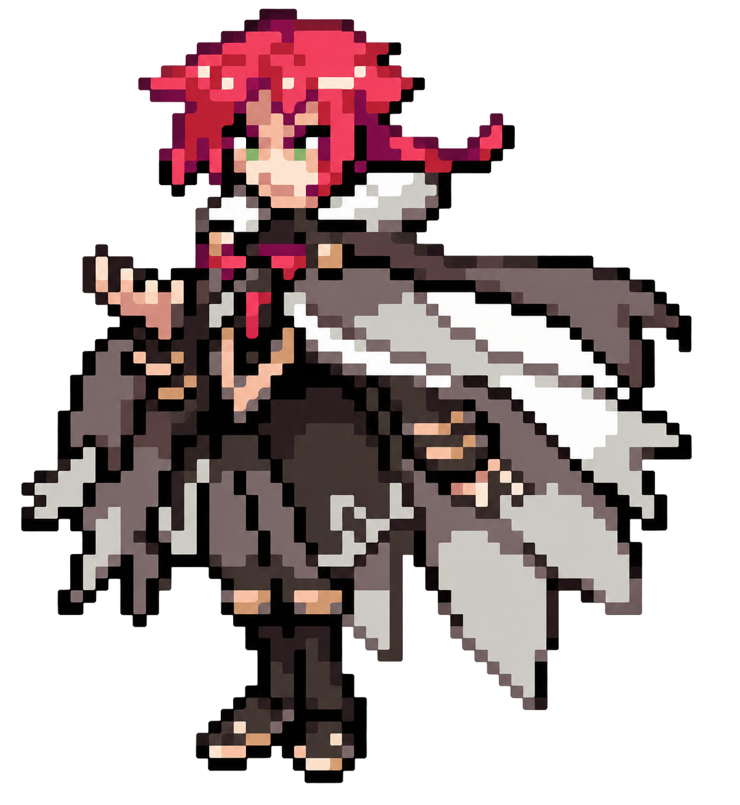

BORRIUS DEUTSCHE VERSION Lade Version
Borrius wartet.
Auf Deutsch.
Wähle deine eigene Pokémon-FireRed-ROM. Der deutsche Patch wird hier im Browser angewendet. Deine ROM wird nicht hochgeladen.
01 ROM wählen02 Prüfen03 Patchen

Patch erstellen
.gba · Rev 0
Datei auswählenPokémon FireRed (USA), Rev 0
Patch wird vorbereitet …
Du benötigst eine eigene legale Sicherung. Unterstützt wird nur die US-Version Rev 0, nicht Rev 1 oder die deutsche Feuerrote Edition.
Anonyme Zählung ohne Cookies (GoatCounter): ROM-Wahl, Patch-Erfolg oder -Fehler und direkter BPS-Download. Keine ROM-Daten oder Dateinamen werden übertragen.